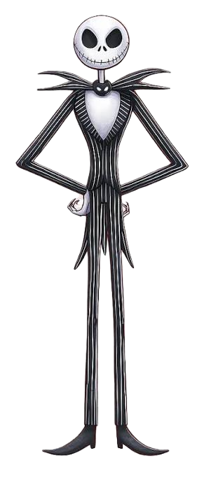
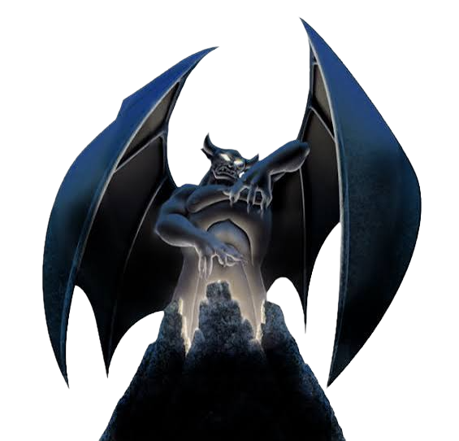
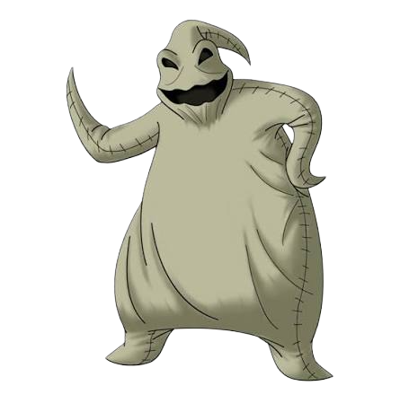
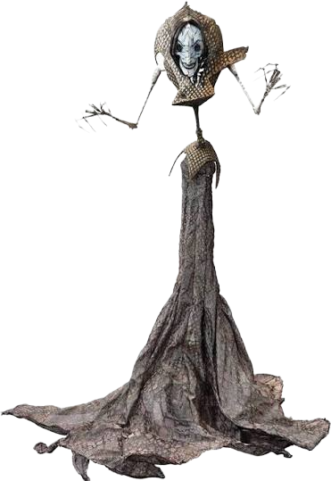
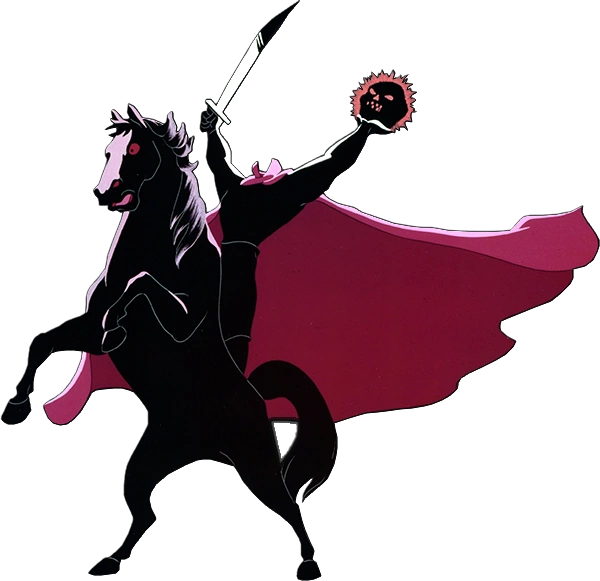
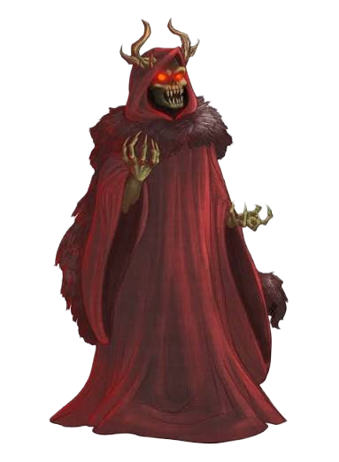
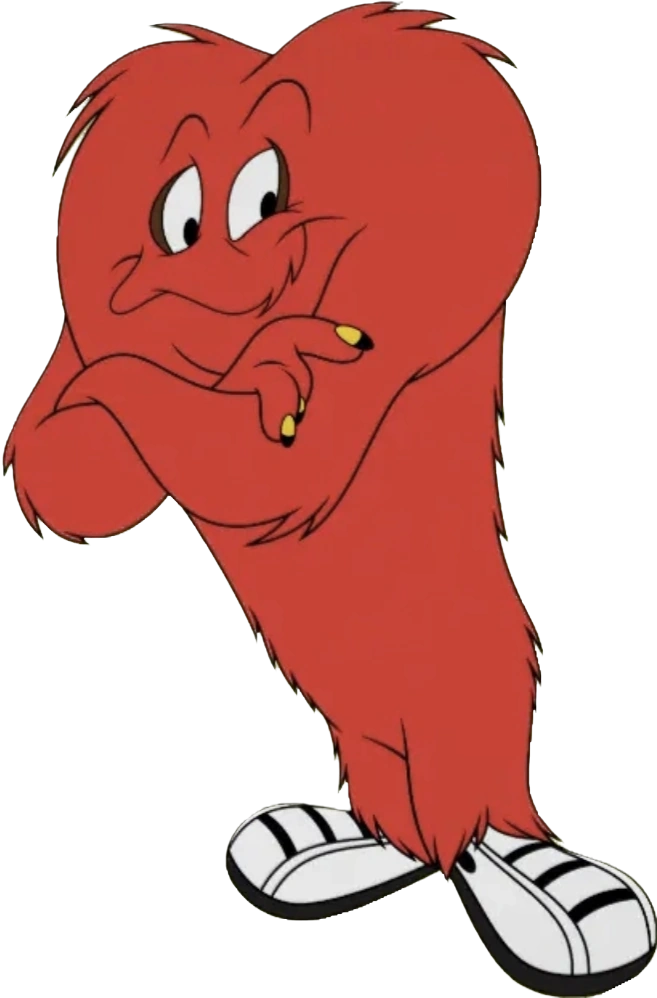
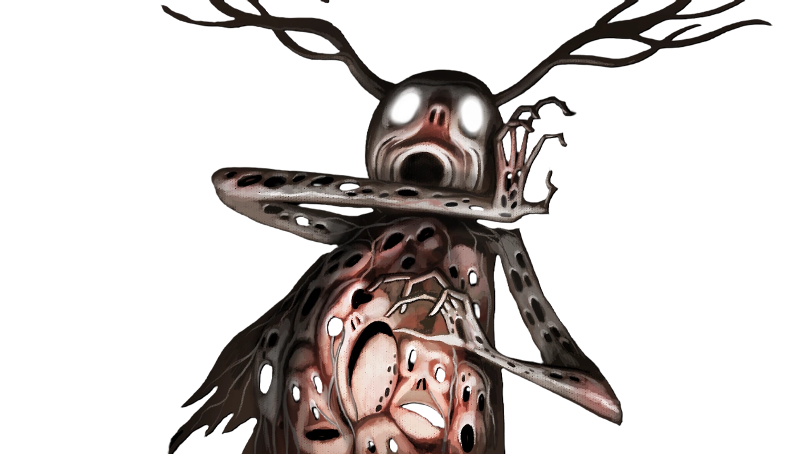
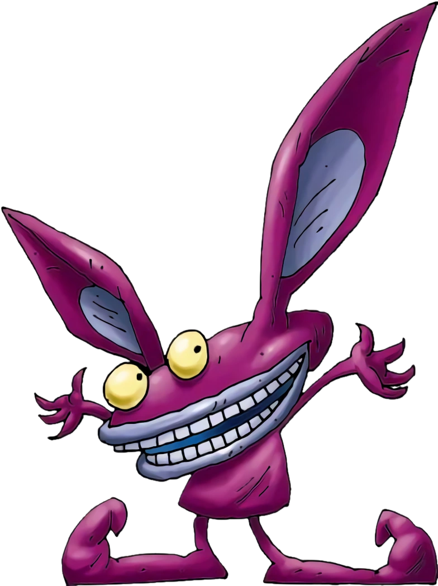

Monster's Website!
Its a normal website in the Monster World.
You will meet some spooky monsters here, dont be scared!
Jack Skellington
The Pumpkin King of Halloween Town, a tall, lanky skeleton with a high-class pinstripe suit and a tragic
artistic streak.

Chernabog
A gigantic, winged demon god who wakes up on Walpurgis Night to summon ghosts, fire demons, and harpies
from the top of Bald Mountain (Night on Bald Mountain).

Oogie Boogie
A gambling-obsessed, jazz-singing baddie who looks like an ordinary burlap sack—except he is stuffed to
the brim with live bugs and snakes.

The Beldam
A terrifying shapeshifting demon who lures children into an alternate world, replacing their eyes with
shiny black buttons.

The Headless Horseman
A fiery-eyed, sword-wielding specter riding a black steed who hurls a glowing jack-o'-lantern at poor
Ichabod Crane.

The Horned King
A rotting, skeletal warlord with glowing red eyes and ram-like horns, bent on raising an undead army.

Gossamer
A giant, hairy, pear-shaped orange beast with massive tennis shoes, glowing eyes, and hidden claws.

The Beast
A towering, shadowy silhouette with branches for antlers, whispering from the dark woods and harvesting
lost souls into oil lanterns.

Ickis
A small, twitchy, bruise-colored student monster from Nickelodeon's underground academy with giant ears
and a habit of munching garbage.

Count von Count
A purple, aristocratic vampire who loves counting thunder, bats, and numbers with an echoing laugh.